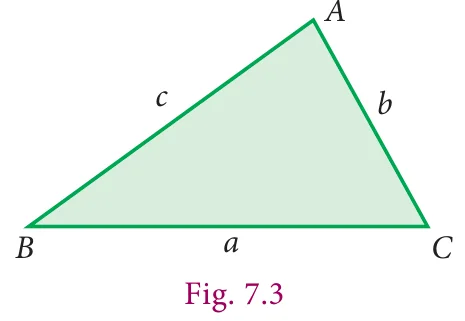
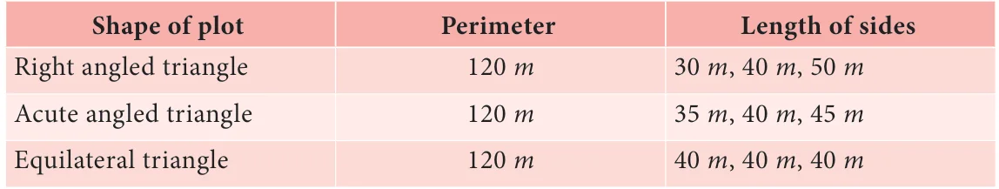
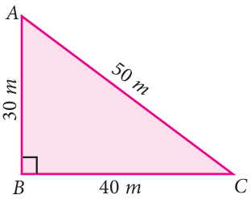
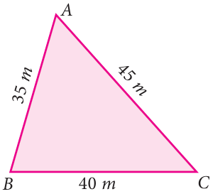
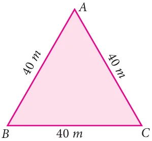

How will you find the area of a triangle, if the height is not known but the lengths of the three sides are known?
For this, Heron has given a formula to find the area of a triangle.

If \(a\), \(b\) and \(c\) are the sides of a triangle, then
the area of a triangle \(= \sqrt{s(s-a)(s-b)(s-c)}\) sq.units.
where \(s = \frac{a+b+c}{2}\), 's' is the semi-perimeter (that is half of the perimeter) of the triangle.
Note
If we assume that the sides are of equal length that is \(a = b = c\), then Heron's formula will be \(\frac{\sqrt{3}}{4}a^{2}\) sq.units, which is the area of an equilateral triangle.
The lengths of sides of a triangular field are \(28\,m\), \(15\,m\) and \(41\,m\). Calculate the area of the field. Find the cost of levelling the field at the rate of ₹ 20 per \(m^{2}\).
Solution
Let \(a = 28\,m\), \(b = 15\,m\) and \(c = 41\,m\)
Then, \(s = \frac{a+b+c}{2} = \frac{28+15+41}{2} = \frac{84}{2} = 42\,m\)
Area of triangular field \(= \sqrt{s(s-a)(s-b)(s-c)}\)
\(= \sqrt{42(42-28)(42-15)(42-41)}\)
\(= \sqrt{42 \times 14 \times 27 \times 1}\)
\(= \sqrt{2 \times 3 \times 7 \times 7 \times 2 \times 3 \times 3 \times 3 \times 1}\)
\(= 2 \times 3 \times 7 \times 3\)
\(= 126\,m^{2}\)
Given the cost of levelling is ₹ 20 per \(m^{2}\).
The total cost of levelling the field \(= 20 \times 126 =\) ₹ 2520.
Three different triangular plots are available for sale in a locality. Each plot has a perimeter of \(120\,m\). The side lengths are also given:

Help the buyer to decide which among these will be more spacious.
Solution
For clarity, let us draw a rough figure indicating the measurements:



- The semi-perimeter of Fig.7.4, \(s = \frac{30+40+50}{2} = 60\,m\)
Fig.7.5, \(s = \frac{35+40+45}{2} = 60\,m\)
Fig.7.6, \(s = \frac{40+40+40}{2} = 60\,m\)
Note that all the semi-perimeters are equal.
- Area of triangle using Heron's formula:
In Fig.7.4, Area of triangle \(= \sqrt{60(60-30)(60-40)(60-50)}\)
\(= \sqrt{60 \times 30 \times 20 \times 10}\)
\(= \sqrt{30 \times 2 \times 30 \times 2 \times 10 \times 10}\)
\(= 600\,m^{2}\)
In Fig.7.5, Area of triangle \(= \sqrt{60(60-35)(60-40)(60-45)}\)
\(= \sqrt{60 \times 25 \times 20 \times 15}\)
\(= \sqrt{20 \times 3 \times 5 \times 5 \times 20 \times 3 \times 5}\)
\(= 300\sqrt{5}\) (Since \(\sqrt{5} = 2.236\))
\(= 670.8\,m^{2}\)
In Fig.7.6, Area of triangle \(= \sqrt{60(60-40)(60-40)(60-40)}\)
\(= \sqrt{60 \times 20 \times 20 \times 20}\)
\(= \sqrt{3 \times 20 \times 20 \times 20 \times 20}\)
\(= 400\sqrt{3}\) (Since \(\sqrt{3} = 1.732\))
\(= 692.8\,m^{2}\)
We find that though the perimeters are same, the areas of the three triangular plots are different. The area of the triangle in Fig 7.6 is the greatest among these; the buyer can be suggested to choose this since it is more spacious.
Note
If the perimeter of different types of triangles have the same value, among all the types of triangles, the equilateral triangle possess the greatest area. We will learn more about maximum areas in higher classes.